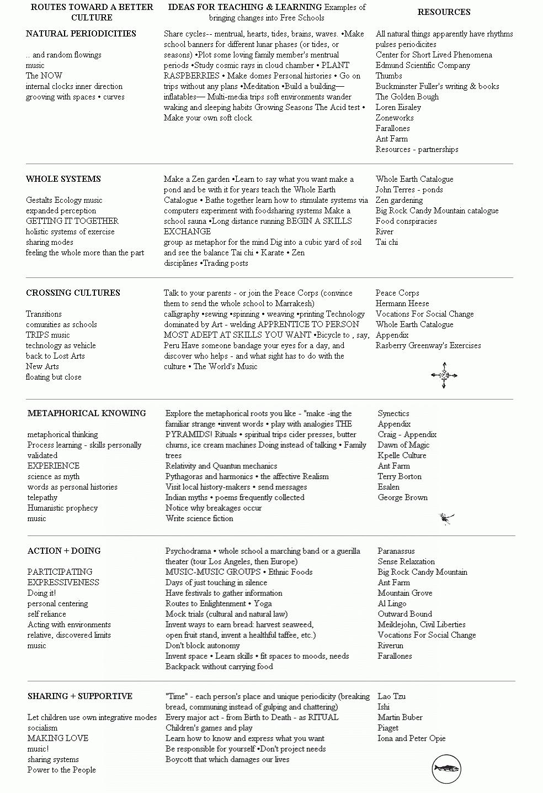

Reprinted by permission from RASBERRY/$3.95 plus 50 cents postage/
Freestone Publishing/440 Bohemian -Highway/Sebastopol, Calif. 95472. So Do It! If there are new ways coming in, and if schools are at the heart of cultures, then free schools for people into the new ways should be profoundly different than what we've known. That's how we got into the charts on the following pages-trying to trace the changes behind the new ways, and link them to "happenings" in free schools. Again, it's only a beginning gesture towards what we hope is continuing conversation.
. . . FROM THE OLD WAYS TOWARD ... CHANGES
"The best way to fight evil is to make energetic progress in the good..."
.... I Ching
|
HOW THE CHANGES MIGHT BE ""MAPPED"" FOR A FREE-LEARNING ENVIRONMENT |
 |
|